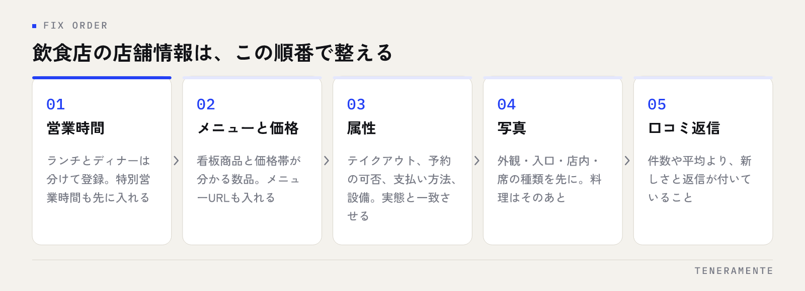

スマートフォンで「近くのラーメン」「駅名＋居酒屋」と調べ、地図の一覧から1軒を選ぶ。飲食店の来店は、この数十秒で決まっています。飲食店のMEO対策で効くのは、順位を上げる工夫より、来店前の疑問が店舗情報だけで解けている状態を作ることです。
📌 この記事の結論
一覧に並んだ時点で、お客様は「今開いているか・何が食べられるか・いくらか」の3つで比べています。この3つが空欄の店は、順位が高くても候補から外れます。営業時間、メニューと価格、属性の順に埋めるところから始めてください。
01飲食店のMEO対策は、比較される前提で情報を整える
地図検索の結果は、1軒だけを見る場所ではありません。一覧に数軒が並び、上から順にタップされて比べられます。つまり飲食店のMEO対策は、自店を目立たせる作業ではなく、比較の場で落とされない状態を作る作業です。

落とされ方は決まっています。営業時間が書かれていないので今行けるか分からない。写真が1枚しかないので店の雰囲気が読めない。価格が分からないので予算が合うか判断できない。どれも順位とは関係のない理由です。
検索結果に出ること自体は、Googleマップの順位が決まる仕組みで説明したとおり距離や関連性に左右されます。一方で、出たあとに選ばれるかどうかは、店舗情報の埋まり具合でほぼ決まります。手を入れて確実に変わるのは後者です。
02最初に直すのは営業時間と特別営業時間
飲食店で最初に直すのは営業時間です。来店の判断が「今から行けるか」で始まるためです。ランチとディナーで分かれている店は、時間帯ごとに分けて登録してください。通し営業に見える登録のまま中休みに来店されると、口コミで指摘が残ります。
あわせて設定しておきたいのが特別営業時間です。祝日、年末年始、お盆、臨時休業の日をあらかじめ入れておくと、その日だけ別の時間として表示されます。入れていない場合、通常営業として案内され続けます。
先に埋めておくと手が止まらない
定休日と祝日の扱いを、年のはじめに一度まとめて入れておく運用が現実的です。直前に思い出して入れる形にすると、忙しい時期から順に抜けていきます。
03メニューと価格を、Googleの中で読める形にする
メニューが分からない店は、候補から外れます。公式サイトやSNSに載せているから大丈夫、とは言えません。地図の一覧を見ている人は、別のサイトへ移動する手間をかけずに次の店へ進むためです。
Googleビジネスプロフィールには、メニューを登録する項目と、メニューページのURLを入れる項目があります。全品を登録する必要はありません。看板商品と価格帯が分かる数品が入っていれば、予算の判断はできます。
価格を書くことに抵抗がある場合も、幅を持たせた表記で構いません。来店前に知りたいのは正確な金額ではなく、自分の予算と合うかどうかです。
| 来店前に確かめること | 埋める場所 | 空欄のときに起きること |
|---|---|---|
| 今から行けるか | 営業時間・特別営業時間 | 候補から外れる、または来店後の不満になる |
| 何が食べられるか | メニュー・メニューURL・写真 | 他店のメニューと比べられず、検討から抜ける |
| いくらか | メニューの価格・価格帯 | 予算が合うか分からず、見送られる |
| 入れる状態か | 属性（テイクアウト・席・設備） | 条件で絞り込まれたときに表示されない |
04属性を埋めると、絞り込みで残れる
属性は、店の設備やサービスを選択式で登録する項目です。テイクアウト、店内飲食、デリバリー、予約の可否、支払い方法、設備といった内容が該当します。
属性が効くのは、お客様が条件で絞り込むときです。「テイクアウトができる店」「予約できる店」を探している人に対して、該当する登録がなければ候補に残りません。やっているのに登録していない項目は、やっていない店として扱われます。
逆に、やっていないことを登録するのは避けてください。来店後の落差は、そのまま口コミに書かれます。属性は実際の運用と一致させることが前提です。年に1回は、実際の提供内容と照らして見直しておくと安心です。
05写真は、料理より先に「入りやすさ」から
飲食店の写真は料理から増やしたくなりますが、来店前に不安になるのは店の中です。初めて行く店で気になるのは、席の広さ、席の種類、1人でも入れる雰囲気か、子ども連れで行けるか。これらは料理の写真では分かりません。
順番としては、外観（夜と昼の両方）、入口、店内の全体、席の種類が分かるもの、そのあとに料理です。外観が分かる写真があると、店の前まで来てから探し回る時間が消えます。
古い写真を残したままにしない
内装やメニューを変えた店は、変更前の写真が残っていないか確認してください。写真と実際が違うと、期待と違ったという評価につながります。
06口コミは、評価の数字より返信の中身
口コミは依頼して増やすものですが、評価の平均を上げようとするより、新しい口コミが途切れていないことと、返信が付いていることを優先してください。読む側は平均点より、直近の投稿内容を見ています。
返信は、良い内容にも、厳しい内容にも付けます。厳しい口コミへの返信は、反論ではなく事実の確認と、変えた点を短く書く形が無難です。読んでいるのは投稿者だけでなく、これから来店を検討している人だからです。
依頼の時機は、会計のタイミングが自然です。席に案内する前や食事中に声をかけると、体験が終わっていないため具体的な内容になりません。
07月1回の確認を、同じ項目で回す
飲食店の店舗情報は放っておくと崩れます。メニューの改定、価格変更、営業時間の変更、季節メニューの入れ替えが起きるためです。確認は月1回、同じ項目で回すのが続けやすい形です。
見るのは、営業時間と特別営業時間、メニューと価格、属性、新しい写真、未返信の口コミの5つです。確認の手順はGoogleビジネスプロフィールの月次チェックリストにまとめてあるので、項目を決めるときの下敷きにしてください。
また、Googleビジネスプロフィールには、ルート検索や電話の回数が見られる画面があります。順位が見えなくても、ここが動いているかどうかで手応えは確認できます。
口コミは増やしたほうがよいですか、返信を優先したほうがよいですか？
メニューをすべて登録する必要はありますか？
臨時休業はどこに書けばよいですか？
08まとめ：直す順番を決めてから、順位を気にする
飲食店のMEO対策は、営業時間 → メニューと価格 → 属性 → 写真 → 口コミ返信の順に整えるのが、手戻りの少ない進め方です。順位を動かす前に、出たときに選ばれる状態を作るほうが先です。
TENERAMENTEなら、この5項目を店舗の実情に合わせて埋めたうえで、月1回どこを見るかまで決めた状態でお渡しします。何を直せばよいか分からないまま店舗情報を触る時間がなくなり、営業時間やメニューの変更が出たときだけ手を入れる運用に落ち着きます。MEO対策の進め方をご覧いただいたうえで、お問い合わせからお気軽にご相談ください。